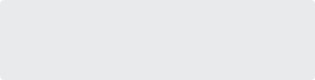
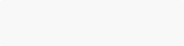

Color 颜色
概述
iView 推荐使用以下调色板的颜色作为设计和开发规范，以保证页面和组件之间的视觉一致。
主色
iView 使用较为安全的蓝色作为主色调，其中 Light Primary 常用于 hover，Dark Primary 常用于 active。
Primary
#2d8cf0
Light Primary
#5cadff
Dark Primary
#2b85e4
辅助色
辅助色是具有代表性的颜色，常用于信息提示，比如成功、警告和失败。
Success
#19be6b
Warning
#ff9900
Info
#2d8cf0
Error
#ed3f14
中性色
中性色常用于文本、背景、边框、阴影等，可以体现出页面的层次结构。
标题 Title
#1c2438
辅助/图标 Sub Color
#80848f
正文 Content
#495060
失效 Disabled
#bbbec4
边框 Border
#dddee1

分割线 Divider
#e9eaec

背景 Background
#f8f8f9